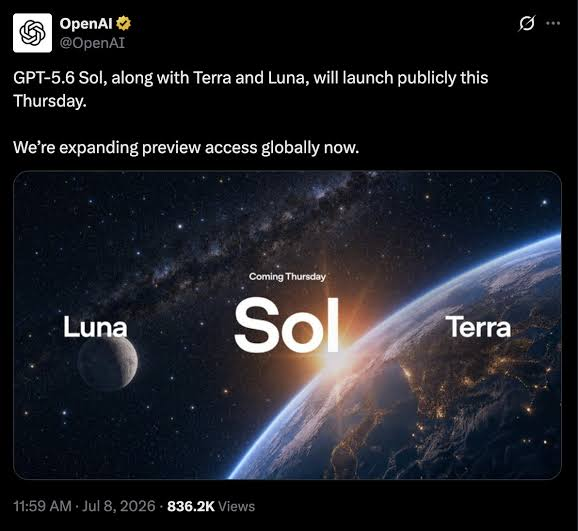

奶昔🥤
@realNyarime
很多人看到GPT-5.6的名字都懵了，甚至OpenAI官方插件、技能似乎都可以在Chat模式使用
Sol=GPT5.6（日）价格对标Claude Fable 5
Terra=GPT5.6mini（地）价格对标GPT 5.5
Luna=GPT5.6nano（月）价格对标GPT 5.4mini还要贵一点
Ultra=Claude的ultra code workflow
Pro=只是单纯的think more并默认屏蔽工具、技能
网页、手机的work模式=单纯的把Codex跑在OpenAI自己的Cloud容器中
